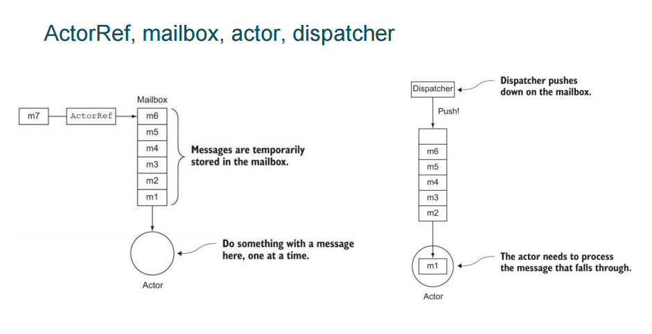
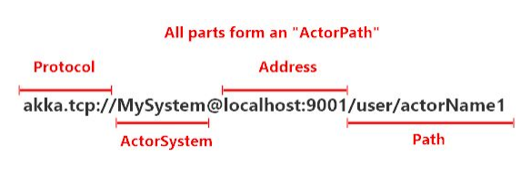
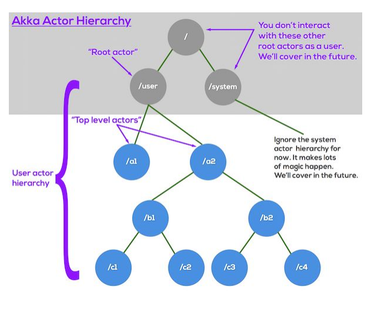
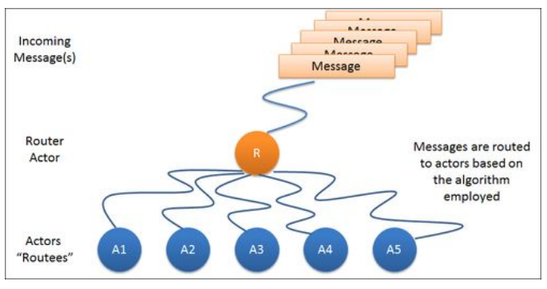
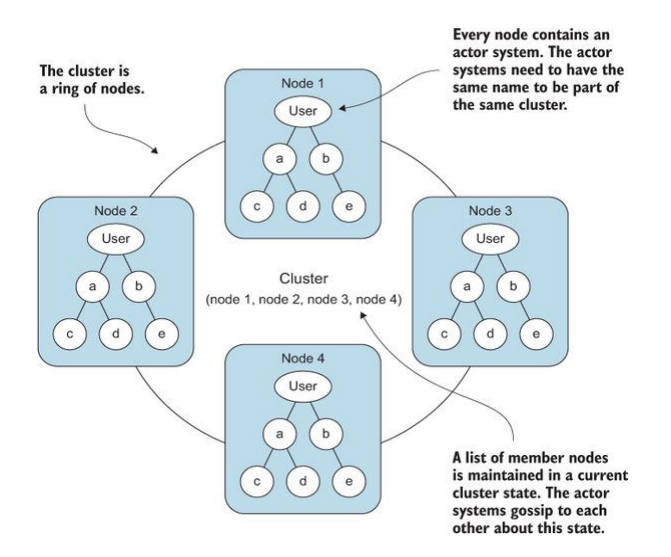
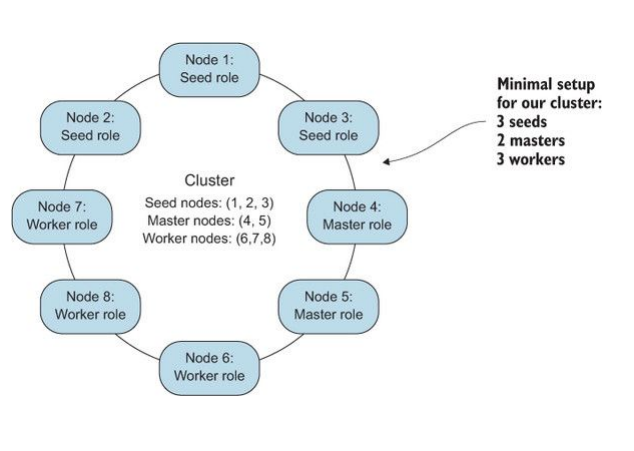
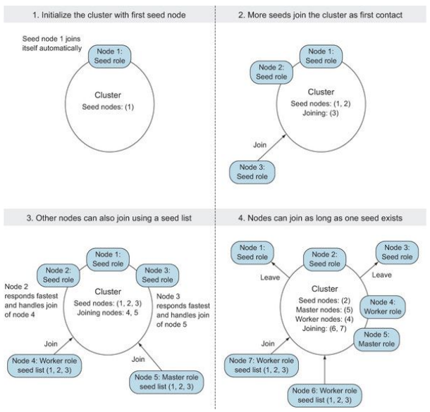
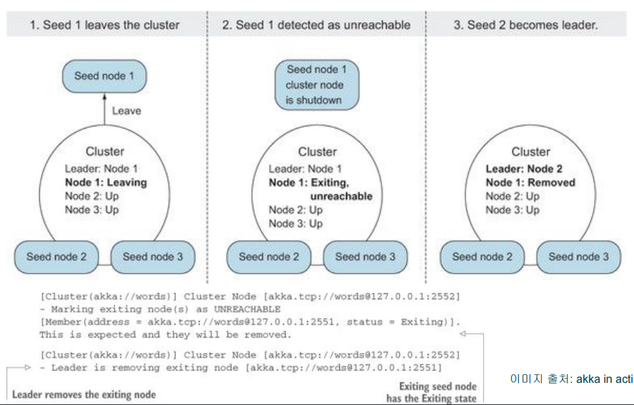
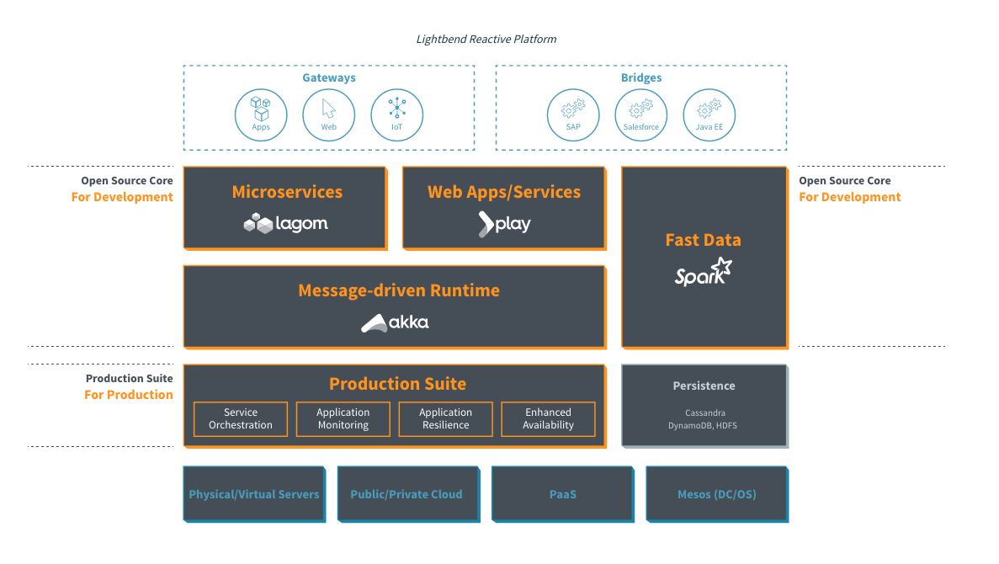

Open Community의 정기기술 세미나 75차 발표 - Akka를 이용한 리엑티브 프로그래밍 101
발표자- 고재도
github, opencommunity 공지, 발표자료
AKKA
Reactive란?
- 유저액션에 즉각적인 빠른 응답
- 데이터 바인딩 선언적(절차지향과 반대)
- 리액티브 스트림은 비동기적인 데이터 스트림
- 리액티브 선언
Reative 선언
- 민감성(Responsive) -> 낮은 대기 시간
- 유연성(Resilient) -> 실패 탐색기로부터 장애상황시 즉각적으로 버팀.
- 신축성(Elastic) -> 클러스터 + 샤딩으로부터 스케일 up/out
- 메세지주도(Message-Driven) -> 액터 + 스트림을 통해 콤포넌트들간의 비동기 커뮤니케이션
참고 - ZD넷 - 임백준 - 리액티브 개발 패러다임에 담긴 메시지
실무에 사용되는 회사
paypal - 우리는 Akka로 148,000,000명이 넘는 사람들에게 미래의 돈을 전달하고 있습니다.
Akka 소개
아카는 Java와 스칼라를 둘다 지원하고 JVM 기반에서 병렬성, 신축성, 유연성을 처리하기위해 actor 기반의 메세지 주도 런타임과 툴킷입니다.(framework는 아닙니다. 기존 코드에 유틸리티 코드처럼 쉽게 추가할 수 있습니다.)
Akka is an actor-based message-driven runtime and toolkit for managing concurrency, elasticity and resilence on the JVM with support for both Java and Scala
간단하게 강력한 병렬성과 분산 어플리케이션을 만들수 있다.
AKKA
- Actors - 간단하고 높은 성능의 병행처리
- Cluster / Remoting - 지역 투명성, 유연성
- Cluster Sharding - remote시에 자동으로 처리되는 것.
- Streams - 스트림 back-pressured
- Persistence - 이벤트 sourcing
- HTTP - 카프카, 카산드라, DynamoDB와 통합된 완벽하게 비동기적이고 리액티브한 HTTP Server
Actors
- Simple and high-level abstractions for distribution, concurrency and parallelism.
- Asynchronous, non-blocking and highly performant message-driven programming model.
- Very lightweight event-driven processes (several million actors per GB of heap memory).
Fault Tolerance
- Supervisor hierarchies with "let-it-crash" semantics.
- Actor systems can span over multiple JVMs to provide truly fault-tolerant systems.
- Excellent for writing highly fault-tolerant systems that self-heal and never stop.
Location Transparency
- Everything in Akka is designed to work in a distributed environment: all interactions of actors use pure message passing and everything is asynchronous.
Persistence
- State changes experienced by an actor can optionally be persisted and replayed when the actor is started or restarted. This allows actors to recover their state, even after JVM crashes or when being migrated to another node.
Actor
Actor Model Frameworks / Languages
- Erlang / Elixer
- Akka(JVM/Akka.ent)
- Orleans(.NET)
- CAF(C++)
- Celluloid(Ruby)
- Pulsar(Python)
1973 Actor모델 이론 발표 -> 1986 Erlang이 Actor모델 적용 -> 2009 jvm scala akka 탄생
Actor model은 컴퓨터 과학에서 행위자를 형행 연산의 기본적 기본 단위로 취급하는 병행 컴퓨팅의 수학적 모델이다. 행위자가 받는 메시지에 댕으하여, 행위자는 자체적인 결정을 하고 더 많은 행위자를 만들며, 더 많은 메시지를 보내고, 다음에 받을 메시지에 대한 응답 행위를 결정할 수 있다. 행위자는 개인 상태를 수정할 수 있지만, 메시지를 통해서만 서로에게 영향을 줄 수 있다.(락의 필요성을 제거함.)
액터는 병행처리 원시 기술. -> Thread 대신 Actor로 병행처리 지원
Actor
- concurrency primitive
- persistent
- encapsulate internal state
- actors interact exclusively via asychronous messages
Actor가 할 수 있는것.
- Actor sends messages
- Actor change its state
- Actor change its behavior
- Actor create more actors
- Actor process exactly one message at a time
actor 구조

Akka Actor Path

- 액터 identifies
- 액터를 가리키는 proxy / forwarder를 표현할 수 있다.
- Contains location and transport information
- 지역 투명성
- 하나의 path는 많은 actor를 표현할 수 있다.(router pool)
- 하나의 actor는 많은 주소를 가질 수 있다.(cluster)
supervision
액터의 동작 상태는 다른 액터에게 감시되고 관리되어진다.
The running state of an actor is monitored and managed by another actor
let it crash -> supervision after crash
Akka Actor Hierachy
parent actor는 child actor를 supervision할 수 있어서 child의 상태를 받아볼 수 있고 설정할 수 있다.

참조 - Actor References, Paths and Addresses
Demo
CO2 Monitoring Device -> Akka baseed Rule Engine System
Scale up with router
Routers
- pool - the router creates routees as child actors and removes them from the router if they terminate
- group - the routee actors are created externally to ther router and the router sends messages to the specified path using actor selection, without watching for termination. a pool needs the number of routee instances, and a group needs a list of routee paths.

Routers
akka.actor.deployment {
/parent/router1 {
router = round-robin-pool
nr-of-instances = 5
}
}
val poolRouter: ActorRef =
context.actorOf(FromConfig.props(Props[Worker]), "router1")
val router2: ActorRef =
context.actorOf(RoundRobinBool(5).props(Props[Workder]), "router2")
Routers
akka.actor.deployment {
/parent/router3 {
router = round-robin-group
routees.paths = ["/user/workers/w1", "/user/workers/w2", "/user/workers/w3"]
}
}
val pool: ActorRef =
context.actorOf(FromConfig.props(), "router3")
val router2: ActorRef =
context.actorOf(RoundRobinBool(paths).props), "router4")
Routing Logic
- RoundRobinPool and RoundRobinGroup
- RandomPool and RandomGroup
- BalancingPool
- SmallestMailboxPool
- BroadcastPool and BroadcastGroup
- ScatterGatherFirstCompletedPool and ScatterGatherFirstCompletedGroup
- TailChoppingPool and TailChoppingGroup
- ConsistentHashingPool and ConsistentHashingGroup
DEMO
Akka Cluster
Akka Cluster

Akka Cluster Membership

Akka Cluster Joining the cluster

Akka Cluster Leaving and Exiting

DEMO
akka in ligthbend

auto downing은 production에 사용하지 말라고함 -_-?
http://doc.akka.io/docs/akka/snapshot/scala/cluster-usage.html
anti use case
actor 안에서 future를 쓸 때 sender가 꼬이는 문제가 있으니 조심. http://stackoverflow.com/questions/16898131/sender-inside-a-future